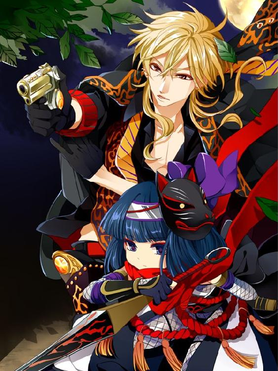

| 週間小説BoysLove第五号 週刊小説BoysLove (甘粕屋) | |
| 甘粕杏奈 | |
| (2017) | |
甘粕杏奈
・獄段姫之介（ごくだん・ひめのすけ）
極神会系直参獄段組組長。悪の科学実験施設で「製造」された究極のΩ。女王蜂を模したフェロモンを持ち、セックスで人間を配下にすることができる。一五歳で施設を逃げ出して裏社会の住人になり、二七歳で自分の組を持つに至った。義務教育すら終えていないので、やや教養や常識に欠ける面も。
・蜂須賀恭一郎（はちすか・きょういちろう）
古宿署刑事課警部補。つい最近まで二十代だったのに、とうとう三十代になってしまったことを少しだけ気にしている長身の美男子。文武両道で、学生時代についたあだ名は「スーパーマン」。
・蟻塚（ありづか）
古宿署組織犯罪対策課警部補。精悍な色男だが、蜂須賀恭一郎への歪んだライバル心のため、その瞳は濁っている。
・片桐（かたぎり）
蜂須賀家の運転手。
・狭霧（さぎり）
会員制高級風俗店「ロストエデン」から逃げてきたΩの青年。極段組みの経営するキャバクラ「ネフィリム」で働いていたが、スパイだったことが判明した。
・小手毬（こでまり）
古宿署刑事課巡査部長。蜂須賀恭一郎の相棒。小肥りで愛嬌のあるムードメーカー。
・蜂須賀光太郎（はちすか・こうたろう）
恭一郎の祖父。元警察官僚。恭一郎のことを「恭坊」と呼んでかわいがっている。
・蜂須賀一臣（はちすか・かずおみ）
恭一郎の兄。常に弟を見下すような発言をしているが、内心ではその能力を恐れている。
・深川（ふかがわ）
極神会系直参獄段組若頭。元・極神会系三次団体旭組の若頭で、監禁されていた一五歳の姫之介を救出し、以来世話係に。同じく獄段組に所属する麹町とは公私ともにパートナー。
・麹町（こうじまち）
極神会系直参獄段組ナンバー２。深川とは公私ともにパートナー。趣味は日サロで肌を焼くこと。キックボクシングの元プロ。
・長内（おさない）
八十神系二次団体長内組組長。十二年前、一五歳の姫之介を監禁し、犯したチンピラのうちの一人。
獄段姫之介は違法な人体実験施設で究極のΩとしてこの世に生を受けた。女王蜂を模したフェロモンを発散することができ、身体を繋げることで配下を増やすことができるという能力を持っている。
一五歳の時に施設を逃げ出し、古宿の浄瑠璃町を中心とする裏社会で、フェロモンと極上の膣を武器に力のあるヤクザの庇護を受け、今では極神会系直参獄段組組長になるまでにのしあがった。
普段の主な仕事は、自分の組のかわいい子分どもに身体を舐めさせたり繋げたりすることでフェロモンを組中に行き渡らせること、また同会系の組長、第三勢力の組長などに身体を与える枕外交が仕事だ。
そんなある日、獄段組にΩの二人組が逃げ込んできた。Ωの人身売買に関わっていると思われる風俗店「ロストエデン」で働かされていた二人は、用心棒を殺して逃げて来たらしい。
Ωの幸福を奪うΩ製造施設、さらにそれと繋がりのある人身売買組織を壊滅させるべく普段から裏社会を探っていた姫之介は、探偵を雇って「ロストエデン」で二人を買った客を突き止めた。カイザー製薬の重役である槙田次郎というその男の元に女装して会いに行った姫之介だが、人身売買組織の手先と思われるスナイパーに槙田を殺されてしまう。
自らも強制発情剤を嗅がされ、窮地に陥る姫之介。だが、突如現れた長身の刑事に救われた。その刑事の名前は蜂須賀恭一郎。英国風の三つ揃いのスーツに仄かな香水の香りを身にまとい、艶やかな黒髪に中性的な美貌の色男。こんなに美しい刑事は見たことがない、と姫之介は目を奪われる。
恭一郎にセーフハウス（隠れ家）まで送ってもらった姫之介は、欲望のおもむくままに恭一郎と身体を重ねようとするが、恭一郎に一喝される。どこの誰とでもいきなり繋がるなど、野蛮人のすることだと。
恭一郎は姫之介に口移しで抑制剤を飲ませると、さっさと帰ってしまった。
だが姫之介の心には、すでに恭一郎の印象が強く焼きつけられていた。恭一郎のことが忘れられず、なんとかして会いたいと女装を思いつく姫之介。あの美しい刑事ともう一度会うことはできるのか......。
（週刊小説BoysLove第一号に掲載）
恭一郎にもう一度会いたくて、女装するために女物の服を買いに行った姫之介だが、恋する乙女の服は壊滅的に似合わなかった。意気消沈し、アドバイスを求めるために獄段組が経営するキャバクラ「ネフィリム」に足を運んだ。
そこで先日獄段組に逃げて来た二人のΩ、夕霧と狭霧が元気に働く様子を見て、安心する。姫之介が裏社会で生きるに当たって自らに課した使命は人身売買組織とΩ製造施設の壊滅だが、組織の正体がまだわからない以上、当面できることと言ったら逃げてきたΩを保護し、まっとうな職場環境を与えることだけだ。
だが、槙田を通じて人身売買組織に肉迫できるかもしれないという矢先に殺されてしまい、悔しさを拭い去れない姫之介。
結局、色恋に現を抜かしている場合じゃないと悟り、せめて恭一郎と出会った場所で物思いにふけりたいとセーフハウスに向かう。
だが、そこで待ち受けていたのは思いがけずあの男......蜂須賀恭一郎だった。
ヤクザスーツにオールバック、眼鏡にくわえ煙草というヤクザ丸出しの格好で恭一郎と相対する羽目になった姫之介は、苦し紛れに「三十分後に来い」と言う。目の前のヤクザがあの時の女装のΩだと気づかない恭一郎は、承諾して姿を消す。三十分できちんと女装して恭一郎の上に乗り、セックスすることを心に誓う姫之介。
一方、恭一郎は姫之介のセーフハウスに向かう前、自宅の祖父・光太郎に呼び出されていた。何としても女装のΩに再会しなければと意気込んでいた矢先の呼び出しに、恭一郎は憔悴する。実は、女装のΩには危機が迫っていた。古宿署の組織犯罪対策課警部補・蟻塚に目をつけられているようなのである。蟻塚には黒い噂があったからだ。取調中に殴る蹴るの不当な暴行をくわえるというものである。しかも、女装のΩを襲ったもう一人のΩは、留置所で不審な自殺をしていた。相棒の小手毬は、それが蟻塚のしわざにちがいないと言う。
しかし、元警察庁長官である祖父・光太郎の呼び出しには逆らえない。さっさと用事を済ませるべく向かった邸内で、祖父から聞かされた話とは、
「獄段組組長獄段姫之介を目の前に連れて来い」
という内容だった。光太郎は現役時代の人脈を駆使して、獄段組がΩの人身売買組織として暗躍しているという事実を突き止めているというのだ。恭一郎は、警察を信用しない光太郎の態度に不穏なものを感じつつ、はっきりと返事はせずに邸を辞した。
（週刊小説BoysLove第二号に掲載）
やっとのことで恭一郎と会う約束を取り付けることができた姫之介。セーフハウスで女装し、念入りに化粧をして恭一郎を待つが、やってきたのは古宿署の刑事・蟻塚だった。銃を向けられ、蟻塚にレイプされてしまう姫之介。しかも間の悪いことに、その真っ最中に恭一郎が訪ねてきてしまう。
恭一郎に助けられた姫之介だったが、蟻塚にレイプされるところを見られてしまったことで動揺し、泣きながら告白をする。恭一郎に相手にしてもらえないだろうと観念していたが、恭一郎は姫之介に同情したのか、彼の自宅のマンションに連れて行かれ、思いがけず甘い一夜を過ごすことになった。
（週刊小説BoysLove第三号に掲載）
恭一郎の自宅のマンションで、彼と甘い一夜を過ごした姫之介。だが、刑事と極道の関係に甘い未来はない。恭一郎がシャワーを浴びている隙に、彼のマンションを抜け出した姫之介。高層ビル街の間にあるひっそりとした公園で深川たちの迎えを待っていたが、そこに現れたのは深川ではなく、狭霧だった。
姫之介は狭霧に銃で脅され、危うく連れ去られそうになるが、危機一髪のところで深川に助けられる。だが、深川も重症を負ってしまう。
そこへ現れた恭一郎の言動により、狭霧と同行している運転手の片桐は、蜂須賀家の人間だということが判明する。姫之介の中に恭一郎に対する疑惑が生まれる。自分は恭一郎にだまされているのではないか、恭一郎は自分を捕えようとしているのではないか。
隙を見て恭一郎から逃げ出すことに成功した姫之介だが、その別れは最悪なものとなった。
（週刊小説BoysLove第四号に掲載）
１
西京都王魔区にある蜂須賀邸、蜂須賀一臣の寝室に、ひとりの小柄な青年が現れた。負傷しているのか、微かに血の匂いが漂う。
「狭霧か」
一臣はベッドに半身を起こして本を読んでいたが、目も上げずに言った。
「すみません。獄段姫之介に逃げられました」
「お前ほどの者でも奴を捕まえられないか。......撃たれたか」
「はい......。ですが、それより問題が」
「恭一郎だな」
「はい。すっかり獄段姫之介というΩに骨抜きにされている様子でした」
「弟を懐柔するとは、ますます興味深い。何としても捕えて正体を暴きたい」
「はい。それから蟻塚ですが、獄段姫之介の手に堕ちた模様です」
報告を聞いて、一臣は深いため息をついた。
「あれも仕方のない男だな......。なまじαに生まれてしまっただけにコンプレックスがひどい。人間らしいと言えばらしいが」
「どうなさいますか。始末しますか」
血気盛んな狭霧の言葉に、一臣は笑った。
「いや、むしろ獄段姫之介のフェロモンの支配下にある蟻塚を使った方が、油断させられるかもしれない。お前はもういい、休め」
「私は、まだ動けます！」
狭霧は必死の形相で一臣を見つめている。一臣は穏やかな微笑みをその口元に浮かべると、ベッドを降りて狭霧の傍にひざまずいた。
「お前はゆっくり傷を癒せ。つまらないことで自分を無駄に消費するな。頼りにしているんだ。いざというときに動いてもらうときのために、今は休むといい」
そう言って頭を撫でた。狭霧はおとなしくうなだれた。
「......わかりました、お父さん」
２
「えーっと、ここだな......」
小田切探偵事務所、と入り口に書いてある古い建物の前で、蜂須賀恭一郎は立ち止まった。浄瑠璃町の外れの、人通りのほとんどない通りに面した寂れた場所だ。相棒の小手毬とは今日は別行動を取っている。恭一郎にはどうしてもやらなければならないことがあった。彼の想い人、獄段姫之介のことを少しでも知るために。
やや曇ったガラスの扉を開けて中に入る。薄暗い部屋の中は少々ほこりっぽい。キャビネットが明らかに部屋の容量を超えて設置され、それでも収納しきれない書類が上に山積みになっている。いつ雪崩を起こしてもおかしくはない。だが接待用のソファは黒い革張りで、高級感があった。探偵本人が使うデスクもマホガニー製だ。しかし、上に載っているラップトップパソコンにはべたべたと卑猥なステッカーが貼られている。部屋の調度と住人がちぐはぐな感じのする事務所だ。
「小田切保です。探偵業は親父から引き継いだ副業で、普段は風俗ライターで喰ってるんですがね」
小田切が冷蔵庫から取り出したコーヒーを、恭一郎は缶のまま受け取った。小田切は探偵というよりは路上ミュージシャンのように自由な服装をしていた。この暑いのに長袖のＴシャツを着てビンテージ風のジーンズ、革のブーツ。長い黒髪を後ろで一本に束ねている。あまり清潔とは言えない無精髭だが、目には活力があった。口元に痣のような跡があり、頬に大きな絆創膏を貼っている。やはり探偵業というのは生傷が絶えないものなのだろうか。
「今日はいきなり押しかけてすみませんでした」
「姫之介さんからの紹介でしょ？ あんたがここに入ってきた瞬間、わかりましたよ。匂いでわかるんです、匂いで」
恭一郎は思わず自分の匂いを嗅いだが、すぐに「そういう意味じゃない」と悟った。腹の奥が、かぁっと熱くなる。
（姫は、この男とも......寝ている）
予想はしていたはずなのに、悔しさで床をのたうちまわりたくなった。姫之介の携帯電話を覗き見したときから、彼がどんな男なのかわかっていたはずなのに......。
昨晩、姫之介と濃密な夜を過ごしたあと、恭一郎はシャワーを浴びている間に彼に逃げられてしまった。追いかけてやっと見つけた公園には、なぜかあの狭霧という青年と、蜂須賀家に長年仕えている運転手・片桐の姿があった。しかも狭霧と姫之介は負傷していた。何があったのかはわからない。だが、姫之介率いる獄段組と蜂須賀家が敵対しているらしい、ということだけはうっすらとわかった。
恭一郎の祖父・光太郎といい、蜂須賀家は獄段姫之介に目を付け、執拗に狙っている。光太郎が言うように、獄段組がΩの人身売買に関わる悪の組織だからだろうか。しかし、姫之介や狭霧の言動を聞く限り、とてもそんな悪事に手を染めているとは思えない。惚れた欲目だと言われてしまえばそれまでだ。だが、恭一郎は姫之介がそんなことをしているとはどうしても思えなかった。
姫之介を逃してしまった恭一郎は、公園で呆然と立ち尽くした。公園の地面には、狭霧が流したと思われる血が点々と残っていた。自分は暴力をふるってでも姫之介を捕えるべきだったのか。彼をやすやすと見逃してしまった自分に、警察官を続ける資格はあるのか......。さまざまな思いが胸を去来した。
そのとき、見つけたのだ。姫之介のものと思しき、ひび割れた携帯端末を。
恭一郎はそれを拾って手に取ってみた。間違いない。姫之介が持っていたものだ。恭一郎は愛しさを押さえ切れず、その画面に口づけた。姫之介の指先の味がするような気がした。下腹部が熱く疼いた......。
翌日、恭一郎はそれを科学捜査研究所の知りあい、本郷麗子の元に持っていき、復元を依頼した。彼女は「デート一回でいいわよ」と言って快く引き受けてくれたが、大酒呑みの彼女のデートと言ったら朝まで呑み続けることだ。何度も酒乱の彼女につき合わされたことのある恭一郎は、げんなりする。しかし、姫之介の携帯端末のデータを引き出せるなら高い代償だとは思わない。根が真面目な恭一郎は、本郷麗子のウィンクと投げキッスに精神的なダメージをくらったが、本郷は仕事が早かった。その日の午後すぎにはもう、携帯のデータは綺麗にリストアップされて出て来た。
その内容は、獄段姫之介という極道の生態を詳しく解き明かして余りあるものだった。同じ極神会系の組織で面識のある組長とはほとんど寝たことがある様子だった。その中でも姫之介を気に入っている極神会会長と幹部クラスの組長とはとくに頻繁に会っているようだ。それを表す卑猥なメールの内容には、腸が煮えくり返った。恭一郎は自分の中にこれほどの怒りが潜んでいたことに驚愕した。だが、それで彼に対する欲望が薄れたというわけではない。むしろ、恭一郎の中で眠っていた強烈な生殖能力が目覚めたようだった。姫之介を誰にも触れさせたくない。彼を自分だけのものにしておきたいという欲望が、どんどん強くなって腹の中で真っ赤に燃える蛇のようにとぐろを巻く。
Ωの人身売買に関する内容については、姫之介が自ら話していた通りだ。姫之介がΩ人身売買組織を追っているような内容が確認できた。どうやら姫之介は小田切保という私立探偵に依頼して、八十神会がバックについている高級風俗店「ロストエデン」について調べていたらしい。きっかけは、例の狭霧というΩの青年が獄段組のキャバクラ「ネフィリム」に逃げ込んできたことだ。
調べを進めていくうちに、先日殺されたカイザー製薬の重役・槙田次郎が浮上した。槙田は「ロストエデン」の常連で、かなり吐き気を催す性癖の持ち主だった。年齢の若いΩを買い求めては拷問をして殺していたらしい。その情報を小田切から入手した姫之介は、おそらく槙田を問い詰めるために女装をしてカイザー製薬の本社に忍び込んだのだろう。そこを襲われて強制発情剤を嗅がされ、追手に銃を突きつけられて絶対絶命だった姫之介に恭一郎は出会った。そういうことだ。
恭一郎はメールの内容をもとに小田切探偵事務所の所在を調べ、こうして会いにやってきた。
「実は僕、こういう者です」
恭一郎が警察手帳を開いて見せると、小田切の顔色が変わった。
「ちょっと待ってよ、聞いてないよ......」
「先日、槙田次郎が殺された件に関係があるかもしれないので、獄段姫之介の依頼とあなたが調べ上げた内容をできるだけ詳しく教えて欲しいんです」
「そんなこと言われたって、こっちにだって守秘義務ってもんがあるしさぁ。姫之介さんのことべらべらしゃべったら信用失っちゃうよ」
「答えられる範囲で構いません。......たとえば、極段組が八十神会と組んで、『ロストエデン』から利益を得ていたというようなことはありますか？」
「はぁ......？ どっからそんな発想が出てきたんですかね」
小田切は不愉快そうな顔をした。大げさな顔だが、不自然というわけでもない。本気で気分を害した、という顔だ。
「獄段姫之介があなたに依頼して『ロストエデン』のことを調べていたということはわかっているんです。彼はΩのキャストがたくさんいることを売りにしているキャバクラ『ネフィリム』を経営している。『ロストエデン』から人材の供給を受けていたとしてもおかしくはないでしょう」
「はっ、あんた何にもわかっちゃいないね」
小田切は軽蔑するような笑みを浮かべた。
「姫之介さんはΩの件に関しちゃ正義の味方だよ。あの人は自分がΩってこともあって、Ωを虐待してるような奴には容赦ないんだ。ぶっちゃけ、あの人と『ネフィリム』がなかったらこの街にはΩの死体がもっとごろごろ転がってたと思うよ。あんたも知っての通り、警察はΩが殺されようが犯されようが興味ないって態度だし」
「............」
Ωが被害者の事件に関する警察の腰の重さについては、恭一郎も認識していた。だが言い訳をするなら、そういった事件は被害者のΩの身元がまったくつかめないことがほとんどなのだ。結局事件は迷宮入り、被害者の遺体は無縁仏として共同墓地に葬られる、ということになる。そうなると自然、被害者の家族が固唾を飲んで解決を待っている殺人事件などを優先するようになる、という悪循環の末に現在のような状況になっている。
「......今回の殺された槙田の一件は、あまりにもひどかった。『ネフィリム』に駆け込んできた夕霧っていうΩの子は両眼に縫い針射されて失明してたんだ。でも警察に言ってもどうにもならないだろ？ だから姫之介さんはたぶん、自分で制裁を加える気でカイザー製薬に乗り込んだんだな」
「それで、槙田を殺した？」
「冗談！ 姫之介さんと俺の目的はあくまでΩの人身売買組織を探し出すことだ。警察は現場とか調べてないの？ 姫之介さんは、槙田は窓の外から射殺されたって言ってたぜ。姫之介さんが殺せるわけがないんだよ」
小田切は立ち上がって、デスクの引き出しから何かを取り出した。ほのかに甘いような香りが漂う。
「これ、証拠になるかわからないけど、姫之介さんが槙田殺しのあった日に嗅がされた強制発情剤と同じものだよ。姫之介さんと一緒に特定したんだ」
ビニールのパッケージに入ったそれは丸い形の特殊な容器で、ひねると霧状になって室内に充満する作りになっているらしい。パッケージの表面に図が描いてある。体調を崩してなかなか発情できず、セックスがうまくいかないカップルのための薬だ。だがそれは表向きの用途で、Ωを集めた乱交パーティーなどでよく使用されるなど、いい噂は聞かないいわく付きの薬だ。
小田切は恭一郎にロゴマークを指し示した。
「ほら、ここ見て。カイザー製薬製なんだよ」
「じゃああなたは、槙田殺しはカイザー製薬が、八十神会に指示したと？」
Ω用の発情剤や抑制剤を多く製造しているカイザー製薬が、槙田のようなΩの大量殺人鬼を出したとあっては聞こえが悪い。槙田の悪事が発覚する前に、殺害したということか。
「どう考えてもそうでしょ。実際、姫之介さんは『ロストエデン』のことを嗅ぎ回ってたわけだし」
小田切は肩をすくめた。恭一郎はとあることに気づいて、小田切の顔をじっと見つめた。
「......小田切さん」
「ん、何？」
「あなたは八十神会が槙田を狙撃する計画があることを知っていましたね」
「は、はぁ?! な、何言って......」
「『ロストエデン』のことを嗅ぎ回っていたのは『あなた』でしょう。それで、八十神会に目を付けられた。そこで、誰の依頼で探偵をしているのか問い詰められたのでしょう。......拷問されたのかもしれない。その顔の痣と、絆創膏。さらに、その長袖を捲ったらむごたらしい傷痕が出てくるのかもしれませんね」
「............」
小田切は目に見えて青ざめた。恭一郎は続けた。
「八十神会に拷問されたあなたは、獄段姫之介が彼らを嗅ぎ回っていることと、あの日に槙田次郎を来訪する予定であることを話してしまった。そして八十神会は動き、槙田次郎は殺害され、獄段姫之介は陥れられた」
絶句している小田切に、恭一郎は取り引きを持ちかけた。
「......このことを獄段姫之介が知ったら、あなたは殺されるでしょうか」
「わかったよ、何でも話す......。知ってることは全部洗いざらい教える。でも、姫之介さんに殺されるのが怖いからじゃない。あの人はそんなことしないだろうしな。俺はただ、あの人に嫌われたくないんだよ......」
小田切の顔は青黒くなり、冷や汗がこめかみからだらだらと流れている。嘘は感じられない。
「それでは、獄段姫之介から依頼を受けた経緯と、調査結果を全て見せてもらいましょう」
「ああ。じゃあこっちへ来てくれ」
小田切に誘われて、デスクのある席に座った。ラップトップパソコンの画面を見せられ、説明を受ける。
小田切が出してきた情報の中には、カイザー製薬に関する興味深いものが含まれていた。小田切は彼なりに姫之介に対して罪悪感があったらしく、槙田殺しのあとも密かに調査を続けていた。
「カイザー製薬の現会長、ハインリヒ・ゲーリングって人物がいて、この男の祖父がナチスの高官だったんだ。地球上で最も優れた人類の祖先を創るという極秘プロジェクトを率いていた科学者だった。戦後になって裁判にかけられたときにその研究結果も広く公開されたんだが、その資料の中では、最高の人類を創るにはαじゃなく、実はΩの優越性こそ重要だという研究結果が出だ。でも結局、優れた人類を創ることはできなかったって話だ。......で、俺が考えたのは、カイザー製薬の地下組織があるんじゃないかっていう仮説。秘密の実験組織だよ」
小田切の立てた仮説は、その研究がカイザー製薬に引き継がれ、極秘裏に続けられているのではないかというものだ。カイザー製薬の研究施設がこの西京都のどこかに存在し、Ωを製造して八十神会に卸している。だがその真の目的は金銭的な利益を追求することではなく、ナチスが目指した「究極の人類」を造り出すことなのではないか。
「つまり、槙田みたいな小物が快楽のためにΩを利用しているのはカイザー製薬にとっては瑣末なことで、そんなことは目的でもなんでもないってこと。むしろカイザー製薬が恐れているのは地下で行われている人造人間の実験の方で、槙田の件で芋づる式に発覚するのを恐れて口封じをしたんじゃないのかね......」
恭一郎は、コールネーム紫苑、と書かれた姫之介の血統書のことを憶い出していた。
（姫......あなたがもし、カイザー製薬で製造されたΩなのだとしたら、この僕を惹き付けた特別なΩだというのも納得できます。そして、あなたが一五歳の時に施設から逃げ出したのは、もしかしたら実験の一部なのかもしれない。カイザー製薬はわざとあなたを逃し、強力なフェロモンを持つ特別なΩが街に放たれたらどうなるのか、十年かけてそのデータを収集していたのだとしたら......）
「このカイザー製薬の地下の実験施設は、王魔区にあるってことだけは確かなんだ。もしかしたらほかにも小さいのがあるから、わざわざ地名を書いて区別してるのかもしれないが、ともかく今のところ見つかっている血統書には王魔の記載しかないものばかりだ」
恭一郎は胸騒ぎがした。王魔区の中心には蜂須賀家が広大な敷地を有しており、そこに邸を構えている。姫之介を誘拐しにきたΩの青年・狭霧には、なぜか蜂須賀家の運転手である片桐がぴったりと寄り添っていた。片桐は王魔の邸付きの運転手だ。
（考えたくはない。考えたくはないが、蜂須賀邸は実際に王魔区のど真ん中にあり、片桐は蜂須賀の運転手だ。さらにカイザー製薬は蜂須賀の分家筋が経営するＨＳＫグループの古いビジネスパートナーでもある......これが意味することは、いったい......）
恭一郎は自分の手をじっと見つめた。幼い頃から、自分は人とは違うということから目を背けてきた。どんなに身体の大きな子どもに虐められても、彼らは恭一郎の一睨みで膝をついた。大人になってからは力を制御することを覚えたが、基本的には変わっていない。特別扱いされるのがいやで、警察官になる時も国家公務員試験を受けず、地方公務員としての警察官を選んだ。普通の人のように地道に働いて、普通の人生を送りたかった。
だが、もしも蜂須賀家がカイザー製薬と共同で「最高のα」を創りたがっていたのだとしたら。そして、それが自分なのだとしたら......。
（僕が姫に惹かれたのは最高のαと究極のΩが出会ったからで、すべてが生まれる前から仕組まれていた......。そういうことになるのか）
そんなはずはない、と恭一郎は思った。たとえ肉体的にはそうだったとしても、この気持ちまで嘘だと思いたくない。小田切探偵事務所を訪れたことで、ますます姫之介のことを好きになった。彼に関するさまざまなことがわかった。姫之介が街で虐げられているΩを救いたくて極道をやっているということ。正義感の強い一面があるということ。槙田次郎を単独で訪ねるような行動力もある。もっとも、行動力がなければ極道の組長などやっていられないだろうが......。
そして、姫之介の弱さもまた知ることになった。この小田切という探偵は、どう考えても口が軽いし、信念も薄っぺらい。初見の恭一郎でも彼の本性を見抜くことができたほどだ。なのに、姫之介は小田切を露ほども疑うことなく頼っている。身体さえ繋げていれば相手が裏切らないなどと過信している。それはとても危険なことのように思えた。無防備にもほどがある。
（やはり、姫には僕がついていてあげなければ。あの人を守りたい。今すぐにでも傍に駆けつけたい......）
気持ちだけが逸り、苛つきにも似た不快感が恭一郎の胸を支配している。今すぐにでも姫之介の顔を見て、カイザー製薬の陰謀を説明して意見を聞きたい。そして、彼の気持ちと自分の気持ちを確かめたい。
しかし今朝から獄段組の事務所を訪ねても姫之介はいない、と追い払われてしまうばかりで、彼に会うことはできていない。さらに、外で事務所を張り込んでいるらしき蟻塚とも鉢合わせてしまった。本当は恭一郎も獄段組の事務所の前から一歩も動かずに張り込みたいが......いや、今からでも遅くはない。恭一郎はいったん探偵事務所を辞して、獄段組事務所にもう一度行ってみることにした。
「......お邪魔しました。また何かあったら連絡をください」
恭一郎は名刺を置いて探偵事務所を後にした。扉の外に出て、パーキングに戻ろうとしたときだった。得も言われぬ懐かしい匂いに気づいた。
（この匂いは......間違いない、姫のフェロモンの香りだ）
昨日会ったばかりなのに、もう懐かしい。恭一郎は目を閉じて鼻を上に向けた。だめだ、香りが薄れた気がする。今度は鼻を下に向け、腰を屈めて匂いを探した。どんどん香りが強くなっていく。路地裏に入って奥に進むと、今度は別の匂いを強く感じた。これは、血の臭いだ。
（嫌な予感がする......）
銃を取り出し、慎重に奥に進んでいくと、そこには見覚えのある金髪の若者がうずくまっていた。オレンジ色の派手なスカジャンを着た、やたら色黒の青年だ。
「君は......姫と一緒にいた青年か?! 大丈夫か！」
「う......あんた......助けて......組長が......」
「組長？ それは、獄段姫之介のことか」
恭一郎は顔色を変えた。姫之介の身に何かが起こったのだ。色黒の若者は苦しげにうなずいた。
「や、八十神の奴らに連れて行かれた......」
恭一郎は愕然とした。ここは八十神会にずっと見張られていたのだ。それなのに、姫之介は小田切を信じてのこのこ現れたらしい。恭一郎は下唇を噛み締めた。自分がもう少し早く小田切の裏切りに気づいていれば、姫之介を守れたのに。
「どこだ?! どこに連れて行かれたか、わかるか？」
「うぅ......」
恭一郎が肩を強く掴むと、若者は苦しげにうめいた。唇が紫色になっている。見れば、腹からかなり出血しているようだ。このままでは姫之介の居場所を訊き出す前に意識を失ってしまうだろう。しかし、正規の病院に連れて行くのはまずい。今警察に姫之介の居所を知られるわけにはいかない。古宿にはＨＳＫグループの総合病院もあるが、小田切の話を聞いたあとでは蜂須賀の息のかかった施設も危険だと感じる。
「く、組長は兄貴を......深川さんを守るために無抵抗で......だ、だから、先に闇医者に行かないと......」
「君、そこまで持つか？ 案内してくれ」
「......」
麹町は顔を上げ、爛々と光る瞳でうなずいた。まだ気力は充分なようだ。恭一郎はうなずき返し、麹町を抱き上げてパーキングへと向かった。
３
浄瑠璃町の獄段組事務所兼マンションの寝室で、姫之介は目覚めた。よほど疲れていたのか、デジタル時計は午後をかなり過ぎていた。首を動かして反対側に目を遣ると、麹町が眠っている。その陽焼けした顔は、寝ているときはずいぶん幼く見える。目尻に涙が溜まっているのを見て、姫之介は胸が痛くなった。
（俺のせいだ。俺が、刑事なんかと遊んでるから......）
昨晩、撃たれた深川を病院に連れて行ったあと、発熱して意識が混濁した深川を入院させてここに戻ってきたのだが、麹町の落ち込みようはひどかった。ひとりにしておくのはまずいと考えた姫之介は、麹町と一緒に寝た。麹町は赤子が母親を求めるように姫之介を求めてきた。
『狭霧のやつ、これで兄貴が死ぬようなことがあったら、絶対殺してやる！』
赤い目をしてすがりついてくる麹町の頭を撫でながら、姫之介の胸にも暗い炎が燃えていた。
（狭霧と蜂須賀は、十中八九関係がある。小田切に調べさせて、場合によっては蜂須賀恭一郎、あいつを締め上げる......！）
姫之介はベッドをするりと降りると、カーテンの隙間から外の様子を伺った。はっきりとは言えないが、何かが怪しい。数分観察していると路肩に停車している一台の白いセダンに目がいった。その数メートル先の街路樹の木陰で喫煙している人物がいる......。
（あれは......蟻塚じゃないか）
恭一郎によく似た長身に高級スーツ姿だが、よく見れば恭一郎より一回り小さく、姿勢も猫背だ。それに全身から陽の気を発散している恭一郎に比べて、蟻塚はどことなく暗い雰囲気を漂わせている。
（あの男、狭霧の仲間だったな。だったら、俺を捕まえるまであきらめる気はないってことか）
姫之介はバスルームに入り、シャワーを浴びた。クローゼットから派手なストライプの入ったチャコールグレーのスーツと臙脂色のドレスシャツを取り出して手早く身に付ける。シャツは襟元のボタンをいくつも開けて、蓮っ葉な感じに着る。足元は先のとがった粋がった靴を履く。引き出しからネックレスにピアス、ごてごてした装飾の指輪を取り出していくつも嵌めた。ピアスは片耳にだけ着ける。狭霧に撃たれた傷のせいで、手当はしたものの耳朶がまだじくじく痛んでいる。そして襟足を長く伸ばした金髪のウィッグを装着する。仕上げに眉を細く整え、肌にパウダーをはたき、目尻にほんのりと紅を入れた。唇に潤いを与える無色透明なリップクリームも忘れない。
「よし......これで、どっからどう見てもチャラいホストだろ」
普段の姫之介は黒髪の直毛をオールバックにして銀縁の眼鏡をかけ、ダーク系の色のスーツを着ている。どこからどう見てもそのスジの人間、という演出もあるが、黒髪オールバックに眼鏡の獄段姫之介を印象づけておけば変装がしやすいという利点もある。
鏡の前から移動して麹町に声をかけようと思ったそのとき、いきなり胸ぐらを掴まれた。
「おいお前、このホスト野郎！ どっから入った？ 獄段組に何の用だ！」
麹町だ。いつのまにかすぐ傍で様子を伺っていたらしい。姫之介は吹き出した。
「おいおい、俺だ。変装してんだよ」
「へっ?!」
麹町は愛嬌のある目を見開いて、姫之介の顔をまじまじと見たのち、その場に土下座した。
「ひぇっ、すいあせんっ!! てっ、てっきり、勘違いしたホスト野郎が組長に会いに忍び込んで来たのかと思って！」
「いいよ。俺の変装がなかなかイケてることがわかってよかった」
「あっ、もうバッチリっす！ 世の中の女は全員メロメロっす！」
「それより麹町、俺は小田切探偵事務所に行く」
「はい！ 車、出します！」
麹町は寝ぼけていたわけじゃなく、もうすっかり身支度を整えていた。
「いや、俺はひとりで行く。そのために変装したんだしな」
「えっ、でも危ないっすよ」
「外にデカが張ってるんだよ。それに深川がいない今、お前が皆をまとめろ」
「はい......」
麹町は見るからにしゅんとした。が、こう見えて麹町は腕っ節も強いし、地頭もいい。組の皆の信頼も厚い。あとを任せるに不足はない。
「心配すんな。帰りに深川のところにも寄ってくる」
「はい......！」
やはり深川のことが心配なのか、麹町の瞳が揺れた。
姫之介は歩いて白いセダンの脇を通り過ぎ、わざと蟻塚のすぐ傍を通った。スマートフォンで通話をしている蟻塚はこちらに気づいた様子はない。目の端でそれを確認すると、ポケットに手を突っ込んで大股に通り過ぎた。
小田切探偵事務所は歩いて十五分ほどの場所にある。地下鉄を使えば早いが、考え事をしたくてわざと歩いた。
（蜂須賀恭一郎......あの野郎......潔癖そうな面して、俺のことだましてたのか......）
姫之介の頭の中は恭一郎のことでいっぱいだ。あの男のことを考えれば考えるほど怒りがふつふつと湧いてきて、額にめりめり青筋が浮く。だが同時に、狂おしいほどの劣情も感じた。何も知らない風を装って、狭霧と一緒にいた片桐という運転手と知り合いだったことは腹立たしい。だが、一晩ベッドの中で一緒に過ごしたときの優しい手や、包み込まれるようなディープ・キスを思い出すと、泣きたいような温かい感情が胸に溢れる。
（あいつは深川を撃った奴らとグルだ。だめだ、あんな奴のこと好きになったらきっと後悔する......）
姫之介は必死に自分の感情を制御しようとした。しかし次の瞬間には恭一郎を信じたいという気持ちに圧倒される。
（恭一郎は本当に何も知らないのかもしれない。狭霧の裏には別のバックがついていて、そいつが何らかの目的で俺を欲しているんだ。でも、何のために？ 槙田を探ってたからか？）
そして槙田が殺されたまさにあの日、恭一郎はまるで待ち構えていたかのように姫之介の前に現れた。
（ああだめだ、やっぱりあいつは怪しすぎる。現れるタイミングがよすぎるんだよ。昨晩、公園に現れたときだって、狭霧がやられたら都合よく出てきやがって。俺が狭霧の銃を拾ってなかったらどうなってたか......）
ぐるぐると思い詰めて歩いているうちに、いつのまにか小田切探偵事務所の裏に出ていた。右手には細い路地がある。姫之介は恭一郎のことで頭がいっぱいで、周囲の様子がおかしいことにまったく気づいていなかった。この辺りは確かに店もなく人通りの少ない無機質な高架下だが、ここまで静まり返っているのはおかしい。
突然、姫之介の目の前を黒い影が横切った。
「！」
「おとなしくしろよ。黙ってついてくれば怪我はさせねぇ」
口を塞がれて羽交い締めにされ、周囲を数人のチンピラに取り囲まれている。手下どもの後ろからおもむろに姿を現したリーダー格の男には見覚えがあった。八十神会系の二次組織、長内組の組長に似ている。高級ブランドのスーツをこれ見よがしに着ているが、内から滲み出る卑屈な感じは隠しようがない。
「てめぇは......」
姫之介の中に、憎悪の炎が灯った。長内組は発足してから日の浅い組織で、その由来は姫之介と関係がある。一五でこの街に流れて来た姫之介は、少しの間八十神会系の末端組織に監禁されていたのだが、その時の若頭がこの男、長内だ。深川に救出されたときにその末端組織は壊滅したが、長内はその後いつのまにか八十神会系二次組織の組長におさまっていた。
長内は姫之介の金色のウィッグを鷲掴みにして、額が触れるほどそのあばた顔を近づけてきた。
「相変わらずキレイなお顔だなぁ？ 姫之介ちゃんよぉ」
この男は頭はいいのだが、自分の顔が醜いと思い込み、過度なコンプレックスを抱いている。顔中に残る月面クレーターのような水疱瘡の痕は、覚醒剤のやり過ぎで頭のおかしくなった母親がすべて爪で掻き壊したからだ。長内は喉の奥で笑った。
「くくっ、なぜ俺の変装がわかった......？ って顔してるぜ。教えてやろうか」
口を塞がれたままもごもごと口を動かすと、姫之介と話がしたいと思ったのか、長内が合図をした。口元の手が離れていく。
「......っ、どうしてわかった......」
「お前さぁ、自分がイイニオイぷんぷんさせながら歩いてるってわかってねぇの？ 男が欲しくてたまんないです、っていう卑猥な匂い垂れ流しながら歩いてるんだよ、この淫乱ケツマンコ野郎！」
「ぐふっ」
腹を、膝でしたたかに蹴り上げられた。
「お前のことはずいぶん可愛がってやったよなぁ？ その恩も忘れて袖にしやがって......この御礼はたっぷりしてやるぜ」
「てめぇみたいなデコボコ顔の野郎と寝ると、萎えるんだよ」
「黙れ」
口元をごつい指輪のついた拳で殴られる。事実、組長になって名を披露目たあと、姫之介は長内から何度も誘いを受けていたが、すげなく断り続けていた。極神会が八十神と仲が悪く、姫之介が八十神会系の組長と仲良くすると目を付けられるからというのもあったが、この長内という男はどうしてもムシが好かない。つき合えば悪いことが起こるような気がした。
「知ってるぜ？ いつも腰巾着みたいにくっついてる深川が今どこにいるのか」
「てめぇ......！」
姫之介の顔から血の気が引いた。深川が入院している病院を見張っているぞ、と言っているのだ。
「おとなしくついてくるよな？」
「くっ......」
姫之介は力なくうな垂れた。
「イイ子だ」
両脇から長内の手下に抱えられ、まさに連れ去られようとしたときだった。
「おい、組長から離れろ！」
（こ......麹町?!）
飛び出してきたのは、オレンジ色の派手なスカジャンの麹町と、獄段組の若い衆だった。たちまち乱闘になり、殴り合う鈍い音と怒声があちこちから聞こえる。その中から拳を構えて近づいてきたのは麹町だ。長内がそれを見て、口元に薄ら笑いを浮かべた。
「へぇ、お姫さまを救いにくるのは、やっぱり一番顔のいい奴か」
「組長に手ぇ出したらぶっ殺す」
麹町の瞳はシャブでもキメているかのように見開かれ、爛々と輝いている。だがそれが薬のせいじゃないことを姫之介は知っていた。麹町はリミッターが外れるとこうなるのだ。
「麹町、やめろ！」
「えぇ？ やめんなよ、これからがお楽しみだろ？ おい仁王、行け」
仁王と呼ばれたスキンヘッドの男が麹町の前に立ちはだかった。麹町のほっそりとした長身は、その筋骨隆々とした背中の影に隠れてたちまち見えなくなる。仁王は両手に嵌めた針鼠の形のナックルをがちんとぶつけた。針鼠の背には凶悪な棘がそそり立っている。その盛り上がった上腕には、スキンヘッドに施された刺青と同じ図柄の髑髏が描かれている。どう見てもやばい。長内が説明した。
「仁王の身体の髑髏はなあ、あいつがこれまで髑髏顔にしてやった奴らの数だけ掘られてるんだよ」
「うぉぉお！」
仁王の雄叫びに合わせて、上半身の筋肉が一層隆起した。着ていたＴシャツがビリビリと千切れ飛ぶ。
「おい仁王、そいつの顔を髑髏にしてやれ」
長内が笑いながら言った。
「仁王の針鼠は怖いぜ？ 一発で顔の肉を半分こそげとるからな。この時点でもうお前の麹町は戦意喪失する。二発目で眼球を抉る。三発目で唇がなくなる。四発目で鼻がもげる。五発目、六発目からは髪の毛ごと頭皮を剥がす。どんどん人間の顔じゃなくなってくぜ」
「麹町、逃げろ......っ！」
姫之介は激しく身を捩った。仁王を背後から蹴り飛ばしたい、と思うが、左右を固めている黒服どもの腕はびくともしない。改めて横目で彼らを見て、はっとした。サングラスの端から垣間見える瞳には、何の感情もない。プロの殺し屋の目だ。
（こいつら、八十神のチンピラじゃない......？）
そのとき、ズドンという鈍い音がした。仁王の巨躯が跳ね上がるようにして二つに折れ、嘔吐物を撒き散らしながら地面に転がった。白目を剥いて、全身をピクピクと痙攣させている。
「ちぇっ、きったねぇな！」
ぷっと唾を吐いて後ずさったのは、麹町だった。片脚を上げてぶらぶらさせているところを見ると、下から蹴り上げたらしい。
「おいおいおっさん、もっと手応えのあるのはいねぇの？」
若い男特有の生意気な面を見せる。姫之介はその勇姿を見て改めて惚れ惚れとした。麹町はキックボクシングの元プロなのだ。が、うっとりしている場合じゃなかった。
「麹町、ここはいったん退け！ 深川が狙われてる。深川の病院が......」
「えっ」
麹町が大きな目を見開いて姫之介の顔を見たとき、隙が生じた。長内はその一瞬の隙を見逃さなかった。懐に呑んでいた匕首を抜き、麹町の腹に突き立てる。
「おいお前ら、行くぞ！」
長内の手下どもが一斉に退いた。あの巨体の仁王も、蟻に運ばれる蟲の屍骸のようにして連れ去られる。姫之介は必死に叫んだ。
「麹町、深川を助けに行け！」
「うるせぇんだよ」
顎の辺りを殴られて、脳が揺れる。唇が切れて血が流れた。ウィッグがずるりと落ちたのを感じた。朦朧とした意識の向こうで長内が怒鳴るのが聞こえる。
「そこの兄ちゃんは路地にでも片付けとけ！ どうせすぐくたばるだろ」
麹町の身体を数人の男が路地の奥へ運んだのを見たのを最後に、姫之介は意識を失った。
（つづく・次回は二〇一七年八月十一日頃発売予定の「週間小説BoysLove・第六号」掲載）
勅使河原真澄（てしがわら・ますみ）
元・天才心理分析官。二年前、凶悪な連続殺人犯を追う過程で敵の罠に陥り、強姦されたうえで去勢されたという過去を持つ。その際、肉体だけではなく精神も破壊されて精神病院に収容されていたが、精神科医セラフィーニの献身的な治療で回復した（『天使が神を殺す時』）。現在はすでに退院し、後見人であるセラフィーニの家に居候している。
セラフィーニ・伊達宗光（だて・むねみつ）
精神科医。母親が日本人、父親がイタリア人のハーフ。精神病院エデンにて真澄の担当医だったことから、彼の後見人になった。
伊達政倫（だて・まさみち）
精神科医。セラフィーニの五歳年上の兄で、異父兄弟。セラフィーニとは仲が良く、ちょくちょく仕事上の相談にも個人的な相談にも乗っている。真澄の事件のことでも相談を受けたことがある。
アンドレアス・ヴァイグル
真澄の元恋人で、真澄を去勢し、強姦した張本人。元ブラウエバルト署の警部。
サクラ
セラフィーニの彼女。
ウサギ
真澄がベビーシッターをすることになった八歳の少女。
ベンジャミン・ドノヴァン
元ＦＢＩ心理分析官。真澄と旧知の仲。
精神病院・エデンから退院し、後見人であり親友でもあるセラフィーニの家に居候していた真澄だが、セラフィーニの恋人サクラは真澄がセラフィーニにべったりなのを快く思っていなかった。
ある日、ついにサクラの不満は爆発し、真澄はセラフィーニの家を追い出されてしまう。
しかし、サクラは真澄にきちんと住み込みの仕事先を用意してくれていた。その仕事とは、ウサギという名前の八歳の少女の面倒をみる、というものだった。
少女がネグレクトされているという話を聞き、真澄はセラフィーニに何の連絡もせず、衝動的に家を出て少女の救出に向かう。ウサギという名前の少女には悲しい過去があり、傷ついた心をもてあましていた。心が荒んでいる彼女に手を焼く真澄だったが、彼女の過去を知ったのをきっかけに、少しだけ距離が縮まる。ウサギを守ることを約束した真澄だったが、その夜、セラフィーニが怒りに燃えてウサギの家に訪ねてきた。
真澄の後見人であるセラフィーニは、自分をないがしろにして勝手に家を出て行った真澄にとても腹を立てていた。大喧嘩の末、ウサギの家に真澄とともに住み込むことを宣言するセラフィーニ。真澄は止めたが、セラフィーニの決意は固かった......。
１
セラフィーニがウサギの家にやってきた夜のこと。客間のベッドに腰かけて、真澄はサクラと電話で話しをしていた。
「セラフィーニのことなら心配するな。君に......少しきつく言い過ぎてしまったと後悔していた。あいつも一時的な怒りで引っ込みがつかなくなったんだろう。君にどうやって謝ろうかとそればかり気にしていた」
嘘ばかり言うのは気が重いが、真澄にはそうするしかいい方法が思いつかない。
『......じゃあどうしてミツは私からの電話に出てくれないのかしら？ 怒って悪かったって本当に思ってるなら、ミツの方から電話をくれるべきじゃない？』
ピンク色の唇をとがらせているサクラの顔が、瞼の裏にありありと浮かぶ。
「男は、一度怒ったものをそうやすやすと覆すわけにはいかないんだ。わかってやってくれないか？ 時間が必要だ」
『時間って、どのくらい？』
「そうだな......一ヶ月とか？」
『長すぎるわ！ 今週末は一緒にパーティーにお呼ばれしてるのに！ 衣装だって合わせなきゃいけないじゃない？ 絶対ムリ！ 今すぐ謝ってくれなきゃだめ！』
「............」
真澄は思わずスマートフォンを耳から離し、スピーカーを凝視した。耳の孔を電動ドリルでほじくられるような甲高い怒声にぎょっとする。サクラの声を電話で聞くのは初めてだったが、こうも恐ろしいとは思わなかった。
『真澄、今すぐミツを呼んできて！ この電話に出て、私と話しをしてって言って！』
有無を言わさない勢いに、真澄は反射的にベッドから飛び上がり、客間を追われるようにして出た。階下に駆け下りてリビングに入ると、ちょうどセラフィーニがバスルームから出てきたところだった。愛用のバスローブに身を包んで、これまた愛用のシャンプーのよい香りを漂わせている。
「セーレ頼む。何も言わずにこの電話に出てくれ」
真澄は祈るような気持ちで電話を差し出した。
「君、僕と口きかないんじゃなかったの？」
対するセーレの返事は冷たい。普段はちょっと気が弱いんじゃないかと心配になるくらい穏やかなセラフィーニだが、こうしてにこりともせずに睨まれると、その美貌が際立って寒気がするほどだ。だがセラフィーニが恐ろしいからと言ってスマホを引っ込めたら、もっと恐ろしいサクラを相手にしなければならない。まさに前門の虎、後門の狼。真澄は身動き取れなくなって、スマホを差し出した格好のまま、固まってしまった。
「大方、サクラだろうけど......今話をしたら、僕は彼女にひどいことを言いそうだな」
セラフィーニは小さくため息をついて肩をすくめた。やはり今、二人に話しをさせるべきじゃなさそうだ。そう判断して端末を引っ込めようとしたとき、セラフィーニの手にそれをひょいと奪い取られた。
「でも電話に出なきゃ君が困るんだろうし。いいよ、貸して」
「あっ、いや、でも、お前......」
「もしもし、サクラ？ 少しは反省した？」
『反省？ 怒り過ぎたって反省してるのはそっちじゃないの？』
「............」
形の良い眉をひそめて、セラフィーニがこちらを睨んでいる。真澄は真っ白になった。こうなることはわかっていたはずなのに、どうして自分は電話を繋いでしまったのだろうと、今さら後悔する。
『ねぇミツ、私だって真澄をいじめたいわけじゃないの。ただ、あなたに愛されたいだけなの！ それをわかってくれずに私だけを責めるなんて、ひどいわ』
「君を愛してるって僕はいつも言ってたはずだけどね」
『もっと言って』
「だめだよ。君は悪い子だったから、当分お預けだよ」
『それじゃ嫌なの、いつもあなたに愛されてるって感じてないと、私ひからびちゃうわ！ ねぇお願いよミツ、あなたのこと愛してるのよ......』
「そんな可愛いことが言えるのに、どうして『ごめんなさい』の一言が言えないの？ 君がそういう態度だと、僕も考え直さなきゃいけないよ」
『考え直すって......何を？』
「君とは、少し距離を置いた方がいいのかなって」
『嘘でしょ？』
「本気だよ」
『............ごめんなさい』
「何が悪かったの？」
『あなたの、大切な友達を追い出して......』
「よくできました」
『じゃあ、愛してるって言ってくれる？』
「ああ、愛してるよ。僕の可愛い子猫ちゃん」
『もっと言って』
「愛してる」
『好き？』
「大好きだよ」
『私もあなたのこと大好き。ねぇ、今週末のパーティーは......』
二人の会話を微動だにせず、置き物になった気持ちでじっと聞いていた真澄だったが、ここまできてそろりそろりと後ずさりし、そっとリビングを出た。一時はどうなることかと思ったが、セラフィーニとサクラの仲は真澄が心配するまでもなかったらしい。夫婦喧嘩は犬も喰わない、というやつだ。正直、二人の仲を案じてあんなに心臓がぎゅっとなったり胃がずしんと重くなったりした自分がひどく滑稽で、馬鹿馬鹿しく思える。まったく、謝って欲しいのはこちらの方だ。すごい勢いで振り回された上に、最後はさんざんイチャイチャするところを見せつけられた。ごちそうさまと言うほかはない。
真澄は客間に戻り、ボストンバッグの中からセラフィーニの枕を取り出した。もともと置いてあった枕を脇にどけてそれを置き、ベッドに入って深々と顔を埋める。セラフィーニのお気に入りのシャンプーの匂いと、ほのかに感じる彼の体臭をいっぱいに吸い込むと、不思議なくらい安心した。彼の飼い犬になって、あの逞しい胸にすっぽりと抱きしめられているような安心感だ。彼の傍を離れてまた悪夢にうなされるんじゃないかと心配していたが、これならぐっすり眠れそうだ。
うつらうつらしながら、真澄はこれからのことを考えて少しだけ不安になった。サクラと仲直りした以上、セラフィーニは明日にでも帰ってしまうだろう。そうしたら、真澄は本格的にこの枕とセラフィーニの写真だけでやっていかなければならなくなる。でも枕は何日も経つうちにきっと真澄の匂いになっていくだろうし、写真はしゃべってくれない。セラフィーニに見守られているという安心感なしに、本当に自分はやっていけるのだろうか。
（いや、やっていかなければならないんだ。セラフィーニのために......）
真澄は枕をぎゅっと抱きしめた。正直、サクラが少しだけうらやましい。もし自分が彼女になれたら、好きなだけセラフィーニと一緒にいられて、一番に愛されることができる。周囲の友人たちや家族にも祝福され、誰に気がねすることもなく、長い人生をともに歩むことができる。セラフィーニと一生一緒にいられるなんてすごく幸福なことだな、と半分眠りながら思った。
今回は家出同然にして彼の家を飛び出してきた真澄だったが、本当は真澄だってセラフィーニと一緒にあそこで暮らしていたかった。彼と暮らしたひと月ちょっと、とても楽しかったのを思い出す。セラフィーニは世話好きで、ボタンを留めるのが苦手な真澄は何かと彼の手をわずらわせたが、シャツのボタンを留めてもらう度に、愛されているような幸福感を覚えた。髪の毛を切ってもらったり足の爪を切ってもらったりしているときは、自分が彼の飼い犬なのだと思うと何だか楽しかった。セラフィーニは料理上手で、色々と工夫して美味しい物を食べさせてくれた。ちょっと時間が空いたときはホームシアターで映画を観たが、映画の趣味も合うことがわかって嬉しかった。
少しだけ残念だったのは、セラフィーニが真澄との性的な接触を極度に避けていたことだ。真澄のセクシュアリティは、ヴァイグルとああいう関係になってから徐々に変わっていった。後天的同性愛者、と言うのだろうか。最初のうちは異性愛者の自分と同性愛者の自分が同時に存在しているような不安定な状態だったが、二年前の事件があって男としての生殖能力を失い、セラフィーニと出会い、完全に同性愛者となったのを自覚した。おそらく、もう女性を性的な目で見ることはないだろう。
実はセラフィーニと暮らし始めてから一度だけ、彼を性的に誘惑してみたことがある。「世話をしてもらっている礼だ」と言って、フェラチオをさせてくれと頼んだ。ヴァイグルにもよくほめられたから、セラフィーニを悦ばせる自信があった。だがひどく冷たい目で拒否されて、その日は一日中よそよそしくされた。翌日からはいつもの機嫌のよいセラフィーニに戻ったが、あのことがあってから、セラフィーニにその気はないと思い知ったのだ。あのときはずいぶん恥ずかしい思いをした。
以来、彼に対する気持ちには蓋をし続けているので、自分でもセラフィーニのことをどう思っているのか、もうよくわからない。ただ、とても大切な人であることは確かだ。一時の劣情で簡単に失ったりはできない。だからもし自分がセラフィーニに対して恋心のようなものを抱いていたとしても、それは決して表に出してはいけない。彼を失いたくないから。一生の友人でいたいから......。
「真澄、ちょっといい？」
「......！」
真澄は寝ぼけ眼で起き出して、周囲を見回した。今、セラフィーニの声が聞こえた気がした。だがこの見慣れない寝室には自分独りしかいない。電灯を点けたまま寝てしまったらしく、部屋の中は明るい。真澄が一人きりで寝ているベッドを見て首を傾げていると、ドアを遠慮がちにノックする音がした。
「真澄、僕だけど」
やはりセラフィーニの声だ。どきん、と心臓が跳ねる。セラフィーニのことばかり考えながらうとうとしていたせいか、何か悪いことをしている場面を見つかったような、後ろめたい気持ちになる。真澄は転げ落ちるようにベッドを降りて、ドアを開けた。
「な、何の用だ......」
拳一つ分くらいドアを開けて、隙間から様子を伺う。何と言っても、セラフィーニとは喧嘩中なのだ。用心しないと、どんな冷たい言葉を浴びせかけられるかわからない。セラフィーニはバスローブ姿のまま、真澄の渡したスマホを片手に持っていた。その表情は穏やかで、いつものセラフィーニだ。少しだけ、ほっとする。
「スマホ、返しに来たんだけどさ。少し話そうよ」
「あ、ああ......」
ドアを開けかけた真澄だが、ふと、とあることを思い出して慌てた。
「ちょっと待ってくれ」
「何？ 部屋に入れてくれないの？」
「いやその、散らかってて、片付けないと」
「そんなの気にしないよ」
「あっ」
セラフィーニが持ち前の怪力でぐいっと押し入ってきた。この男はとんでもなく優しいくせに、たまにものすごく強引だ。真澄はベッドに飛びつこうとしたが、遅かった。
「これって......僕の枕？」
「............」
真澄はうつむいた。顔から湯気が出そうなほど熱い。なんとか言い訳しなければならない。でもそんなときに限って、セラフィーニは意地悪く問い詰めてくる。
「ねぇ、僕の枕だよね、真澄」
「だからその、枕が変わると眠れないって、よく言うだろう」
「でも僕の枕持ち出すのは違うよね。普通は自分の枕持って行くよね？」
「うん......。あっそうだ、ま、間違えたんだ」
「間違える？ 君の枕カバーはクリーム色で僕のが青だから、間違えようがないよね？」
万事休すだ。もう何も言い訳が思いつかない。真澄は意を決して、熱い顔のままセラフィーニの目をじっと見つめた。
「......すまなかった。お前なしで眠れるかどうか自信がなかったから、お前の枕を持ち出してしまった。お前の匂いのついた枕なら、お前が傍にいてくれるような気がして、眠れるかと思って」
「んっ......」
セラフィーニは驚いたのか、いきなり眉をぎゅっとしかめて目を閉じると、口元を覆った。肩が、ぷるぷる震えている。心なしか顔が赤い。気のせいだろうか。数秒後、くわっと目を見開くと両肩をがしっと掴まれた。すごく真剣な表情だ。
「そんなに不安定な状態なのに、僕にだまって家を出て行ったの？」
「それはしかたないだろう。あれ以上お前の傍に居たら......」
真澄はそこまで言って、ごくりと言葉を飲み込む。あれ以上セラフィーニの傍に居たら、サクラの心配する通りになりそうな気がした。それになにより、自分が苦しむことになる。そうなる前に、自分から離れる決心をした。セラフィーニの近くに居て関係が壊れてしまうくらいなら、遠くから彼の幸せを見守っている方がいい。
「僕の傍に居たら、どうなるの？」
セラフィーニの視線と真澄の視線がしっかりと絡み合って、ほどけそうにない。だが真澄は、無理やり視線を引き剥がした。
「と、とにかく、俺はお前の傍にいない方がいいと......」
「ねぇ真澄、ごまかさないで」
「！」
鍵にした人指し指で顎をくいと掬われて、まるでキスをする三秒前みたいにセラフィーニの端整な顔を見上げることになった。心臓がどきんと跳ねて、こめかみの辺りがどくどく音を立てて脈打って、何も考えられなくなりそうになる。
「君さ、もしかして、僕のこと、そういう意味で好きなの？」
綺麗な顔と艶のある低い声で囁かれて、真澄は全身が熱くなった。胸に鋭い痛みが走って、心臓が狂ったように鼓動を速めている。
「なっ、なんで......」
喉がからからに乾いて、自分でも何を言っているのかわからない。
「だって、サクラに言われて家を出たんでしょ......それってもしかして、やきもちじゃないかなって思って......。僕に、サクラか君か、二者択一を迫ったんじゃない？」
「そ、そんなわけあるか！」
思わずさけんだ真澄の声は、裏返っていた。とっさにセラフィーニの枕を掴んで、彼の顔に押し付ける。
「わっ！ 真澄、何するの?!」
「うるさい！ お前のことなんか好きなわけがない！ 枕持って出てけ！」
真澄はセラフィーニを枕ごと部屋の外に押し出して、ドアをばたんと閉じた。そういえばこの部屋のドアには鍵があった。カチャリと鍵を回す。ドアの外からは何度か真澄の名を呼ぶ声が聞こえていたが、案外すぐにあきらめたらしく、階段を降りて行く気配がした。すっかり気配がなくなると、真澄は膝が震えて立っていられなくなり、その場にへたりこんだ。
（お、俺が、セーレのことを、そういう意味で好きか、だって?! そんな......）
そんなはずはない、と何度も自分に向かって言い聞かせるが、心臓の鼓動はなかなかおさまらない。顔中が熱くて、セラフィーニの美しく整った男らしい顔を思い出しただけで胸が苦しくて息もできなくなる。
「そ、そんなことはない......俺があいつに恋をしているなど、そんなことは、あっていいはずがない」
たとえそうだったとしても、決して表に出して言ってはいけない。そのくらいのことはわかっている。セラフィーニがどういうつもりでそんなことを言い出したのかもわかっている。きっと、真澄に謝るためだ。先にこちらの気持ちを訊き出しておいて、予防線を張るためだ。「ごめん、君の気持ちには応えられないよ」と言うセラフィーニの声が脳内ではっきりと聞こえる。申し訳なさそうにハの字になった眉も、まるで彼が目の前にいるかのように思い浮かべることができる。
断られたり拒絶の言葉を吐かれたりするのはいい。サクラという恋人がいるセラフィーニにとってはその反応が当然だからだ。真澄が我慢できないのは、そのあとだ。きっと二人の間には決して埋めることのできない深い溝ができるだろう。ただの友人同士だったときにはなかった、決して縮めることのできない距離ができるだろう。そうなったら、もう気のおけない仲じゃなくなる。何より大切にしていたセラフィーニとの心の絆が、告白したとたんに断ち切られてしまう。
真澄はよろよろと立ち上がり、部屋の灯りを消してベッドに潜り込んだ。自分で思うより精神に受けたダメージは大きいようで、もう何をする気力もない。この部屋にもともとあった枕を引き寄せ、抱きしめて目を閉じる。もう何も考えなくて済むようにさっさと眠ってしまおうと思うのだが、なかなか寝付けない。目を閉じれば浮かんでくるのは、セラフィーニと過ごした楽しい時間ばかりだ。彼と出会い、彼の部屋で暮らすようになり、彼のことを知れば知るほど、彼のことを好きになった。もう二度と離れてはいられないと思うようになるほど、彼なしでは夜も眠れないと思うほど、真澄は彼を求めている。
（そうだ。俺はあいつのことが、好きなんだ）
枕に埋めた頬に涙が流れて、カバーに吸い取られていく。それは決して叶うことのないだろう恋心だ。セラフィーニに抱かれて甘い声をあげるサクラが、いつもうらやましかった。彼女に成り代わりたいと思っていた。真澄がサクラに甘いのは、罪悪感からだ。彼女の恋人に横恋慕している醜い自分が、ここにいる。
そして、やはりセラフィーニの家を出たのは正解だったと思った。サクラの考えは間違っていなかった。あのままセラフィーニの家に居候していたら、遅かれ早かれ真澄の中の想いは膨れ上がって、いつか知られることになっただろう。そうなる前にこうして行き先を準備してくれたサクラには、感謝しかない......。
ドアを、ノックする音がした。
返事をしないでいると、カチャリ、と静かに鍵が回る音がして、ドアが静かに開く。真っ暗な部屋の中に、廊下の灯りが細く差し込んできた。その大きな人影は、セラフィーニだ。彼は真澄が眠っていると思っているのか、音を立てないようにドアを閉めると、静かにベッドの傍まで寄ってきた。そして、真澄のとなりに潜り込んでくる。
「セーレ、何の真似だ......」
「さっきはごめん。いつもみたいに一緒に寝よう」
「鍵は、どうした」
「さっきそれを探しに下に行ってたんだ。鍵のかかる客室なら、きっと鍵があると思ってね」
真澄は無言でセラフィーニの胸に寄り添った。パジャマに着替えた彼の体から石鹸の香りがほのかに漂う。その中に微かに体臭を感じて、腹の奥が疼く。真澄はずっと目を逸らし続けていた己の欲望を、今ははっきりと感じていた。セーレは罪な男だ、と思った。どうしてそれを真澄に気づかせたのだろう。このままずっと恋慕の情に蓋をし続けていれば、淡く儚い恋心などいつか忘れてしまったかもしれないのに。
「......客間はもう一つある。となりの部屋だ。お前はそこで寝ろ」
真澄は力なく言った。セラフィーニに対する恋愛感情を自覚してしまった以上、これまでのように甘えるわけにはいかない。
「君さえよければ、ここでこうして眠りたい」
セラフィーニの大きな手がそっと真澄の頭を撫でる。
「俺はよくない。こんなの......」
こんなことがいいはずがない。セラフィーニは真澄の恋心に鈍感すぎる。もともと女性にとんでもなくもてる男だから、その辺りの感情が麻痺しているのだろう。だが、理性とは裏腹に身体は喜んでセラフィーニに撫でられ、可愛がられていた。習慣とは怖いものだ。真澄はもはや自分からこの優しい手をはねのけることができない。
「さっきのこと気にしてるんだったらごめん。謝るよ。僕が無神経だった」
暗闇の中にセラフィーニの落ち着いた低い声が響く。真澄はどきりとした。心臓がつきつき痛む。
「もうあんなことは二度と言うな。......今までのことは感謝している。お前は俺にとってかけがえのない大切な友人だ。......失いたくない」
最後の言葉は消え入るかのようなか細い声だった。だが、それが本心だ。
「ねぇ真澄、もし僕がサクラと別れたらどうする？」
「そんなことはさせない」
「真面目に聞いて。本気なんだ」
いつになく思いつめたようなセラフィーニの声に、真澄は暗闇の中、うっすらと浮かび上がるその瞳をじっと見つめた。
「さっき電話でサクラと話したんだ。もし今度また同じようなことをしたら、本当に距離を置くって」
あの端から聞いていてかゆくなるような愛の言葉の応酬のあと、そんな話をしていたなんて知らなかった。
「でも正直に言うと、今回のことでサクラとは距離ができてしまった気がしてる」
「俺のせいだな」
「君のせいじゃない！」
セラフィーニは突然声を荒げたかと思うと、真澄の上に覆い被さるようにして顔を覗き込んできた。ちょうど窓から月明かりが差し込んで、その怒ったような真摯な表情が見える。
「ごめん......僕、今夜はおかしいな......。帰宅したら君が家にいなくて、不安になって......少し心が弱くなってるのかもしれない」
セラフィーニは真澄の肩口に顔を埋めた。全身で甘えるようにぐったりとのしかかってくる、その重みが心地よい。真澄は黙って広い背中に腕を回した。いつもセラフィーニがしてくれるように、その背中を優しく撫でさする。
「......サクラのことは好きだよ。可愛い女の子だと思う。僕のこと、とても愛してくれてるのがわかるし。でも、僕の大切な君を大事にしてくれないとなると、心がどんどん離れてしまって......」
「俺はお前の何なんだ。どうしてそこまで気にする？」
「君は......君のこと考えると心配でしかたないんだ。僕がいなくて不安で泣いてないかなとか、ひとりぼっちで寂しくないかなとか......」
「そうか。じゃあ俺にもお前のほかに恋人や友人がいれば、お前は安心するんだな？」
「......っ、まぁ、そうだけど」
「そうか......」
甘いような沈黙が降りてきて、真澄を包み込む。セラフィーニは真澄の上からその大きな身体をどけて、傍に横たわった。指先が触れ合って、どちらからともなく指を絡めあう。ベッドの中ではこうして身体の一部を触れ合わせているのが、もはや暗黙の了解になっている。真澄は自分の心臓の音が痛いほど身体の中で響くのを聞いている。幸福だった。セラフィーニとこうしていると、ヴァイグルのことも何もかも忘れていられた。
だが、自分とセラフィーニがこうしていることを快く思わない人間がいる。それはたぶんサクラだけじゃない。たまにセラフィーニが電話で話しているが、彼の家族も、セラフィーニがどこの馬の骨ともわからない男と暮らしているのを疑問に思っているのが薄々感じ取れた。
（俺はいつまでもセーレに甘えているわけにはいかない。もし俺に親しい友人がいれば安心するというなら、新しく友を作ることも考えなければ......）
真澄の心に、ふとベンジャミン・ドノヴァンの顔が浮かんだ。連絡を取ってみようか、と思いつく。となりに寝ているセラフィーニの様子を伺うと、すでに深い寝息を立てている。真澄は起こさないようにベッドを降りて、スマートフォンを探した。幸い、白くて見つかりやすい色をしていたそれは、サイドテーブルの上にあった。取り上げて部屋を出ると、リビングに降りる。スマホに残された履歴を見ると、今夜、ちょうどドノヴァンから電話がかかってきた形跡があった。セラフィーニとサクラが話しをしていた時間帯だ。もしかしたら、セラフィーニがスマホを持って真澄の寝ている客間を訪れたのは、このことを知らせたかったのかもしれない。
真澄は通話ボタンを押してドノヴァンを呼び出した。
『やあ、真澄！ 君から電話をくれるなんて嬉しいよ』
ドノヴァンの明るい声がスピーカーから聞こえると、ほっとして胸が温かくなった。セラフィーニとサクラのことで、自分がいかに緊張していたのかを思い知る。ドノヴァンの声を聞くのは一週間ぶりだろうか。再び連絡を取りあうようになってから顔を合わせたのは一度きりだが、その後は毎週末に長電話をしていた。真澄の生活の中で、唯一、セラフィーニとは関係のない交友関係だ。
元ＦＢＩの心理分析官で、今は隣県のプロファイラーとして活躍しているドノヴァンの仕事の話を聞いてアドバイスなどを求められ、いくつか意見を交換したあと、ドノヴァンは改まった様子で切り出した。
『ところで真澄、明日の日曜日は、ひま？』
「いや、ひまと言えばひまなんだが」
真澄は今の仕事の内容を軽く説明した。八歳の少女の面倒を見ていること、住み込みであることなど。休日の指示は受けていないが、まさかウサギをほったらかしにして出かけるわけにはいかない。
『なら、遊びに行ってもいいかい？ ウサギと一緒に庭でバーベキューでもしようよ。君の顔が見られれば、俺はそれでいいから』
こんなにストレートに「会いたい」と言われて、真澄は嬉しくてどぎまぎした。この調子だともしかしたら、明日中にセラフィーニをすっかり安心させることができるかもしれない。
「それなら、ぜひ来てくれ。ウサギもたぶん喜ぶ......」
そこまで言って、真澄はセラフィーニのことを考えた。あの男は一度ドノヴァンと顔を合わせているが、あまりいい印象を持ってはいないようだった。でも、せっかくの日曜日なのだからセラフィーニはサクラと過ごすべきだ。もし嫌な顔をするようならサクラに会いに行けと言って追い出してしまえばいい。
『なら、明日午前中に行くよ』
「ああ、楽しみにしてる」
真澄は通話を切ると、今度こそ眠るために二階の客間に戻った。
その夜、真澄は夢を見た。セラフィーニの逞しい腕に抱かれて、何度も何度も突き上げられて、幾度も絶頂に達した。気を失いそうになるほど責め立てられて、これ以上ないほどの幸福を感じた。このまま死ねたらいいのにと思った。キスをして絡めあう舌は甘かった。どうしてもっと早くこういう関係にならなかったのか不思議でたまらない。二人の身体は怖いくらい相性がよかった。深く繋がりあったまま熱っぽい瞳で見つめあって、お互いがお互いの半身なのだと、強く実感した。
朝になって目覚めると、真澄は涙を流していた。セラフィーニはとなりで深い寝息を立てている。夢の中の情事は、真澄に心地よい疲労をもたらした。幸福感の余韻で胸がいっぱいだった。目覚めた瞬間、それが本当にあったことなのだと軽く錯覚したくらいだ。
「セーレ......」
真澄は吐息だけで囁いて、その顔を覗き込んだ。長い睫毛。通った鼻筋。形のよい眉。血色のよい、肉感的な唇。艶めいた無精髭。無防備に眠る彼を起こさないように気をつけながら、頬にそっと、触れるか触れないかの口づけをした。彼と出会えたことを、神に感謝しながら。
（つづく・次回は二〇一七年八月十一日頃発売予定の「週間小説BoysLove・第六号」掲載）
発売日：二〇一七年八月十一日頃 発行予定
八十神会系二次団体長内組に連れ去られた姫之介。一方、重症を負った麹町に遭遇した恭一郎は、深川の収容されている病院へ急行する。
無事に深川を救出したはいいものの、姫之介はどこに連れ去られたのか。途方に暮れる恭一郎の前に現れたのは、古宿署組織犯罪対策課警部補、蟻塚だった------。
今日は日曜日。セラフィーニは帰る気はないし、なんとサクラとベンジャミン・ドノヴァンまで押しかけて来て、ウサギの家は今までになく賑やかなことになっていた。大喜びするウサギ。
だが、サクラにもベンジャミンにも、とある思惑があった------。
ソーシャルカードゲーム『星宝転生ジュエルセイバー』から素材をお借りしています。
ウェブサイト：[http://www.jewel-s.jp/]
（銃を構えた獄段姫之介／金髪のウィッグ、ホストの変装時）
【最新刊】
【既刊】
『天使が神を殺すとき（精神科医セラフィーニ＆心理分析官真澄シリーズ１）』
【ベストセラー】
『鬼王の花嫁』
【人気の電子書籍】
【商業作品】
『水瓶座はきょう失恋するでしょう』（二見書房・シャレードパール文庫）
『お気楽メイド、恋の駆け引き』（二見書房・シャレードパール文庫）
『週間小説BoysLove』第５号
発行 ２０１７年８月４日 第一版発行
著者 甘粕 杏奈（あまかす あんな）
ブログ「粕屋」http://kasuya.blog.shinobi.jp/
E-mail amakasuya@gmail.com